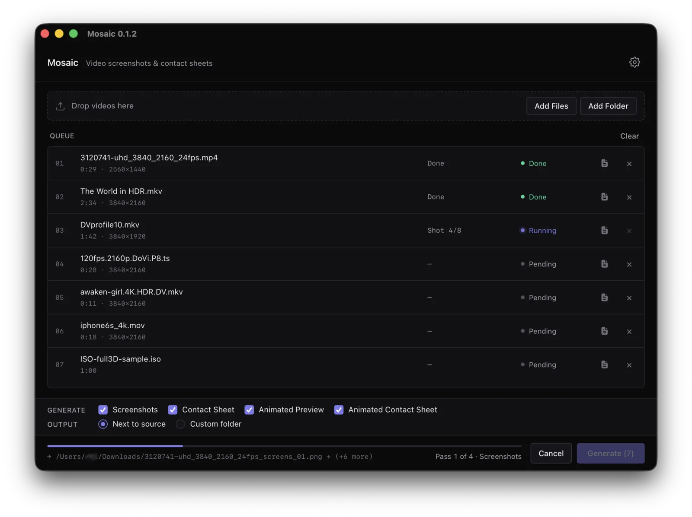

Video contact sheet & thumbnail generator
Mosaic turns any video into a contact sheet, a set of screenshots, or an animated preview — in batches, on your own machine. Drop in a folder, pick what to produce, walk away. Every pipeline drives your local ffmpeg, so nothing is ever uploaded anywhere.
other formats — .msi, .deb, .rpm, CLI binaries
Verify any download against SHA256SUMS, or see the full release.
Requires ffmpeg, ffprobe and mediainfo on your PATH — brew install ffmpeg-full mediainfo. Full requirements →
What is a contact sheet?
A single image holding a grid of frames sampled evenly across a video, each stamped with its timestamp. One glance tells you what a file contains and whether the encode holds up — without scrubbing a player. Archivists, editors and encoders use them as a visual index.
Why a desktop app?
Tools for this have existed for years, but nearly all are command-line only, Linux only, or unmaintained. Mosaic is native on macOS, Windows and Linux: drag-and-drop queue, live per-file progress, and a cancel button that genuinely stops work mid-encode.
Handles the awkward files
HDR10, HLG and Dolby Vision (including Profile 5) are tonemapped to clean SDR automatically, so sheets are not washed-out grey. MediaInfo enrichment gives real codec names — Dolby Digital Plus, not eac3.
4 output types, 1 batch queue
Drop videos or folders, pick what to produce, walk away. Every pipeline runs your local ffmpeg — nothing leaves the machine.
Built for real work
Four decisions that shape how Mosaic behaves under load.
screenshots, sheet, reel, animated-sheet, probe. Stdout is paths-only so it pipes cleanly into xargs. Demo →The app
Minimal by design. Dark-by-default, follows your system theme. Native on every platform.

mosaic-cli — the same pipelines, scriptable
For batch jobs, headless servers and CI. Paths go to stdout and the summary to stderr, so output pipes straight into xargs without filtering. Same ffmpeg requirements as the app.
Verifies the SHA-256 checksum, installs to a user-scoped directory, and prints next steps. Full CLI docs & manual install →